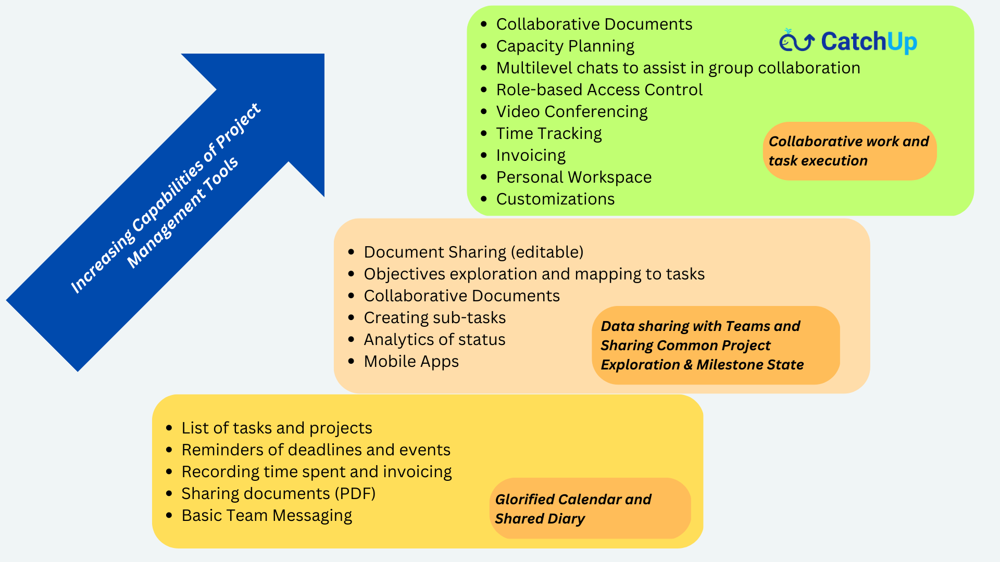

Podemos te dar inúmeros motivos, mas você pode escolher o seu para mudar para o CatchUp!
Porque entendemos os desafios de colaborar e trabalhar em modelos híbridos e remotos!
Para que você possa focar no que importa, e o resto pode ser feito pela CatchUp!
Porque você está cansado de integrar com uma dúzia de outras ferramentas que nossa concorrência quer que você faça!
Porque você acha difícil aproveitar todo o potencial de suas equipes remotas enquanto essas mentes criativas lutam para colaborar e trabalhar juntas!
Porque você deseja parar de pagar por extras caros!
Porque gerir um projeto não deve ser um projeto em si!
Porque você está procurando uma plataforma de colaboração e gerenciamento de projetos poderosa, mas barata e fácil de usar!
Porque você não está procurando apenas um produto, mas sim um produto com uma causa!
Apresentando... um Ambiente de Próxima Geração Poderoso, mas Acessível, para resolver seus problemas organizacionais -
Tudo em um só lugar, por um ótimo preço - acessível de todos os seus dispositivos!
O CatchUp permite que você organize tarefas, atribua-as às suas equipes e gerencie seu trabalho em minutos. Ele tem todos os recursos de que você precisa e muito mais sob o capô que você pode descobrir à medida que se sentir mais confortável com ele. Sem pressa, sem preocupação!
Então... vamos nessa!

Configurando
É uma brisa! Crie um conjunto de projetos ou replique a partir de modelos para aspectos diferentes, mas relacionados, do seu trabalho. Adicione membros da equipe a este projeto, crie as principais tarefas e itens de ação e está tudo pronto!
Gerenciamento de tarefas e projetos
Colabore com sua equipe para concluir as tarefas e itens de ação no prazo e também documente os resultados ao longo do caminho usando bate-papos em tempo real e compartilhamento de arquivos. Utilitários eficientes integrados (como Kanban, calendário, listas de tarefas, notas, etc.) ajudam você a acelerar seu trabalho e manter a produtividade. Você também pode compartilhar arquivos e trabalhar em documentos de forma colaborativa.
Otimizar
Você pode adicionar, modificar ou remover projetos, tarefas, itens de ação e outros produtos de trabalho compartilhados facilmente e otimizar seu fluxo de trabalho conforme necessário. Você tem visualizações ricas, apoiadas por recursos de pesquisa avançados, para obter o status rapidamente e identificar áreas de desenvolvimento futuro!
Em qualquer dispositivo!
Sim, sabemos como as equipes funcionam. Você pode usar o CatchUp em seu desktop para as tarefas mais pesadas e fazer muito em seus smartphones ou tablets em qualquer lugar!
É muito seguro e pode ser personalizado de acordo com suas necessidades, incluindo implantações locais para clientes maiores. Seus dados estão seguros e com backup!
Pare de pagar por extras caros que se acumulam!
Se você está pagando por ferramentas e softwares de videoconferência adicionais que custam um braço e uma perna por uso, nós dissemos a você que as videoconferências e reuniões estão incluídas neste preço plano? Saiba mais experimentando-nos.
Você não precisa de "integrações" com dezenas de outras ferramentas como nossa concorrência quer que você faça!
Todas as nossas funcionalidades estão integradas num único ambiente - reuniões, videoconferências, partilha de documentos, gestão de tarefas e projetos, chats em tempo real. Você não precisa unir Slack, Teams, OneDrive, Dropbox e Zoom apenas para fazer algo funcionar! A vida já é complexa, o trabalho não precisa ser!
Barato para experimentar e usar
Não, não usamos bait and switch. Você pode experimentá-lo gratuitamente e assinar sua empresa por um preço fixo a cada mês. Sem surpresas com base na taxa por usuário por mês. Apenas uma taxa fixa, com base no tamanho da sua organização.
Mal podemos esperar para que você nos experimente e tenha sucesso! Deixe-nos saber como podemos torná-lo melhor para você. Ainda não somos perfeitos, mas você pode ser!
Então, o que você está esperando?
Inscreva-se e aproveite o poder do CatchUp para atingir seus objetivos.
Por que baleia?
Porque há um núcleo muito poderoso que corre sob esta plataforma majestosa e divertida que conduz seus projetos até a conclusão, graciosamente.
E sim! É um Produto com uma Causa!
Por todo o bom trabalho feito, uma parte das nossas receitas é doada para salvar as baleias!